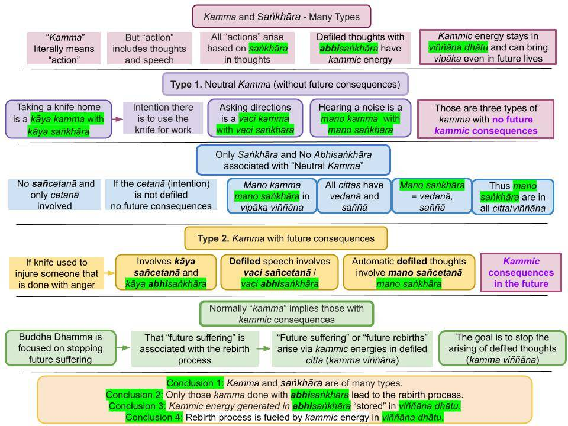

Cetanā expresses the "intention" via a set of cetasika. Saṅkhāra leads to action with that intention. Kamma is the deed done with that intention.
December 14, 2021; revised November 24, 2022; rewritten April 2, 2023

Download/Print: “8. Kamma and Saṅkhāra“
Introduction
1. Kamma is a generic word that means "action" in general. That could mean moving the body, speaking, or thinking (kāya, vaci, and mano kamma.) Kamma can be of mainly three types:
(i) Neutral kamma: like using a knife to cut vegetables or asking directions from someone.
(ii) Akusala (or pāpa/apuñña) kamma: e.g., stabbing someone with a knife or telling a lie to make money.
(iii) Puñña kamma: e.g., using a knife to cut loose a trapped animal or explaining Dhamma to others. A kusala kamma is a puñña kamma done with the comprehension of the Four Noble Truths, i.e., by a Noble Person. Of course, all puñña kamma become kusala kamma only for an Arahant.
- All three types are done with a specific intention. We must engage in various kinds of kamma of the first type in our daily lives to get things done. The "intention" in the second type is evil or immoral, while that in the third type is good or moral.
2. The first type of kamma yields results at that time only; they do not lead to "kammic consequences" in the future. Those actions do not have morally good or bad intentions.
- The second/third type can bring "bad/good results" at that time or in the future. Moral or immoral "intentions" that arise lead to the creation of an unseen "kammic energy" that remains in "viññāṇa dhātu" and can bring vipāka in the future. See below.
- That "intention" is not in the cetanā cetasika (mental factor), per se, but is incorporated via a set of other "moral/immoral" cetasika, as explained below.
- Cetanā cetasika only incorporates appropriate cetasikas into a citta; "cetanā" means to "assemble a citta (with appropriate) cetasika."
- With intention, one generates three types of saṅkhāra to "take action." Kamma is the deed done with saṅkhāra. Kāya, vaci, and mano saṅkhāra lead to kāya, vaci, and mano kamma. A kamma becomes immoral or moral with the incorporation of immoral or moral (sobhana/asobhana) cetasika, as explained below.
Cētanā Is In Every Citta!
3. "Nibbedhika Sutta (AN 6.63)" is a vital sutta that explains many keywords in Buddha Dhamma. Toward the end, it defines kamma: "Cetanā, I tell you, is kamma. With intention, one does kamma through body, speech, and mind." See Ref. 1.
- Now, cetanā is a "universal cetasika," meaning it is in every citta. This is a CRITICAL observation. We don't do good or bad kamma at all times. Thus, kamma means any bodily activity, speech, or even thoughts. For example, we saw that even breathing happens with cittās.
- Therefore, even any action, like lifting an arm, is a kamma. One may also speak and think about getting some task done that would NOT have morally good or bad intentions. Those would NOT belong to akusala, pāpa, puñña, or kusala kamma. They are just kamma. Such "neutral kamma" would not have sobhana (moral) or asobhana (immoral) cetasika. However, cetanā cetasika is still there since it is a universal cetasika.
4. There are seven such "universal cetasika" in every citta: Phassa (contact with an (ārammaṇa); vēdanā (feeling); saññā (perception); cētanā (putting together all relevant mental factors); Ekaggata (One-pointedness); jivitindriya (life faculty); manasikāra (memory.) See Ref. 2.
- Mano saṅkhāra are defined as "vedanā and saññā;" see "Saṅkhāra – Should Not be Translated as a Single Word." Since vedanā and saññā are universal cetasika, mano saṅkhāra arise in every citta. Thus, a "neutral kamma" is done with only mano saṅkhāra.
- A new citta vithi arises when a new ārammaṇa comes in. That contact with the new ārammaṇa is phassa. The mind "feels" that (vedanā) and recognizes it (saññā) with the help of the manasikara cetasika that can recall similar past events. Ekaggata helps keep the mind focused on that ārammaṇa. See "Citta and Cetasika – How Viññāṇa (Consciousness) Arises."
- That complex process occurs within a billionth of a second (lifetime of a citta.) See "Amazingly Fast Time Evolution of a Thought (Citta)." It is critical to read that post to understand this primary process.
- When cetanā starts incorporating "defiled intentions," it becomes sañcetanā, and saṅkhāra becomes abhisaṅkhāra.
Cētanā Becomes Sañcetanā
5. The word "sañcetanā" comes from "saṅ" + "cetanā." Thus, it means cetanā cetasika has incorporated "saṅ" that can contribute to generating kammic energy for future rebirths. I have discussed the importance of "saṅ" in many posts. See "San – A Critical Pāli Root."
- Therefore, saṅkhāra are associated with cetanā, and abhisaṅkhāra (those that contribute to the rebirth process) involve sañcetanā.
- The intention becomes "defiled" when certain types of cetasika arise. For example, an "angry state of mind" is expressed by incorporating dosa and moha cetasika into the citta. When becoming greedy, lobha, moha, and even jealousy (issā) cetasika may arise in citta.
- When cetanā incorporates types of cetasika responsible for future vipāka, it becomes sañcetanā. Then saṅkhāra become abhisaṅkhāra.
6. Only abhisaṅkhāra with sañcetanā are responsible for the rebirth process or saṃsāra.
- The word “saṃsāra” comes from “saṅ” + “sāra” where “sāra” means “good” or “beneficial.” Thus, one is trapped in the rebirth process because of the wrong view that “living in this world is beneficial.”
- This is why the types of saṅkhāra that arise due to the ignorance of the Four Noble Truths (i.e., “avijjā paccayā saṅkhārā”) are kāya saṅkhāra, vacī saṅkhāra, and citta (mano) saṅkhāra that involve kāya sañcetanā, vaci sañcetanā, and mano (or citta) sañcetanā.
- "Paṭiccasamuppāda Vibhaṅga" states: "Kāyasañcetanā kāya saṅkhāro, vacīsañcetanā vacī saṅkhāro, manosañcetanā citta saṅkhāro. Ime vuccanti “avijjā paccayā saṅkhārā”. Therefore, saṅkhāra in Uppatti Paṭicca Samuppāda always involve abhisaṅkhāra with sañcetanā.
- However, only kāya abhisaṅkhāra and vacī abhisaṅkhāra directly lead to the rebirth process. Mano (or citta) sañcetanā do not become abhisaṅkhāra. That is a subtle point we will address in the future.
- A Buddha or an Arahant would not generate abhisaṅkhāra or sañcetanā, but they do generate saṅkhāra with cetanā until Parinibbāna. Their actions, speech, or thoughts would have kammically-neutral kāya, vaci, and mano saṅkhāra associated with them.
"Intention" Comes from Cetasikas Added Based on the Ārammaṇa and One's Gati
7. If the ārammaṇa is mind-pleasing, lobha (greed) can arise in the mind. When the lobha cetasika is incorporated into the citta, it becomes a "lobha citta." On the other hand, seeing an enemy would generate dosa (anger), and the corresponding citta would be angry because cetanā would incorporate the dosa cetasika into it. Thus, cetanā is like a supervisor/administrator who adds other relevant cetasika (good or bad) based on the "state of mind."
- Returning to the types of kamma in #1 above, we can now make sense of the role of the cetanā cetasika. The "intention" comes from the types of cetasika that arise in the mind based on the ārammaṇa and one's gati. For example, someone with "angry gati" is more likely to be angered by even a mild accusation. For an introduction to gati: "The Law of Attraction, Habits, Character (Gati), and Cravings (Āsava)."
- The cetanā cetasika "constructs" a citta by incorporating appropriate cetasika based on one's gati and the type of ārammaṇa. Thus, gati and the ārammaṇa will dictate the "intention." This is a CRITICAL point to understand.
8. If one does a task with lobha, dosa, moha, then it is an akusala (or pāpa) kamma. Another subtle way to say that is any action done with chandarāga (with a mindset that says worldly pleasures are worthwhile pursuing) has at least a trace of akusala nature.
- A particular activity involving generosity, compassion, etc., is a puñña kamma. Here, alobha and adosa cetasika are incorporated into cittā. Cetanā here is still "sañcetanā" IF one has not comprehended the dangers of the rebirth process, i.e., since one still has avijjā (not comprehending the Noble Truths.)
- That is because those "good kamma" are done with the expectation of "better rebirths/good vipāka" in the higher realms of the kāma loka (human and Deva realms.)
- A kusala kamma is a "better version" of a puñña kamma done with an understanding of the Noble Truths/Paṭicca Samuppāda/Tilakkhana.
- If the same puñña kamma is done by someone who comprehends the Four Noble Truths/Paṭicca Samuppāda/Tilakkhana, it would automatically be a kusala kamma. Such kusala kammā are done WITHOUT expectations for worldly benefits, but ONLY with the expectation of attaining Nibbāna and, thus, stopping the suffering-filled rebirth process.
- Details in "Six Root Causes – Loka Samudaya (Arising of Suffering) and Loka Nirodhaya (Nibbāna)" and "Kilesa – Relationship to Akusala, Kusala, and Puñña Kamma."
Kammic Energy Arises In the Mind
9. The three types of kamma are kāya, vaci, and mano kamma. They are done based on kāya, vaci, and mano saṅkhāra.
- When a "neutral kamma" is done with saṅkhāra (that are not abhisaṅkhāra), the kammic energy generated is only enough to get the task done. There is no "residual kammic energy" deposited in the viññāṇa dhātu that can bring vipāka in the future.
- However, when a kamma is done with abhisaṅkhāra (with sañcetanā), part of the kammic energy generated is deposited in the viññāṇa dhātu. Those can bring vipāka in the future, including rebirths.
Kammic Energy Remains in Viññāṇa Dhātu to Bring Vipāka
10. It is difficult for those in the Western world to wrap their minds around the concepts relating to kamma. That is mainly because the focus is primarily on the material world. Ancient Greeks tried to describe the world only in terms of matter, a tradition that has continued with modern science. Modern science investigates material phenomena involving material objects located in space. With the terminology of Buddha Dhamma, that description restricts the "world" to just five "dhātus": pathavi, āpo, tejo, vāyo, and ākāsa. All material objects are made of pathavi, āpo, tejo, and vāyo and located in ākāsa dhātu.
- However, in Buddha Dhamma, there is a sixth dhātu, viññāṇa dhātu, and that is the most important. Viññāṇa - arising in mind (mano) - is the precursor to the material world. See "Manōpubbangamā Dhammā.."
- Kammic energies generated in defiled cittas (as well as all memories or namagotta) are "stored" in the viññāṇa dhātu. See "Where Are Memories Stored? – Viññāṇa Dhātu."
- It may not be easy to understand that post without understanding Paṭicca Samuppāda (PS). I plan to direct this series of posts to clarify all the terms in PS to complete that picture.
All posts in the new series: "Buddhism – In Charts"
References
1. From "Nibbedhika Sutta (AN 6.63): "Kammaṁ, bhikkhave, veditabbaṁ …pe… kammanirodhagāminī paṭipadā veditabbāti, iti kho panetaṁ vuttaṁ. Kiñcetaṁ paṭicca vuttaṁ? Cetanāhaṁ, bhikkhave, kammaṁ vadāmi. Cetayitvā kammaṁ karoti—kāyena vācāya manasā."
2. The "Sammādiṭṭhi Sutta (MN 9)" defines nāma (mentality) as, "Vedanā, saññā, cetanā, phasso, manasikāro—idaṁ vuccatāvuso, nāmaṁ." In Abhidhamma, two more cetasika of jivitindriya and ekaggata are listed together with the above five cetasika. Thus, there are seven cetasika in every citta. The point is that "intention" is not a good translation for cetanā. One's "intention" comes through with the types of moral (sobhana) or immoral (asobhana) cetasika (such as lobha or alobha) included in the citta. The cetana cetasika "puts together appropriate cetasikās and builds the citta." See "What is a Thought?"
Cetanā expressa a “intenção” por meio de um conjunto de Cetasikas. Saṅkhāra leva à ação com essa intenção. Kamma é o ato realizado com essa intenção.
14 de dezembro de 2021; revisado em 24 de novembro de 2022; reescrito em 2 de abril de 2023
Baixar/Imprimir: “8. Kamma e Saṅkhāra“
Introdução
1. Kamma é um termo genérico que significa “ação” em geral. Isso pode significar mover o corpo, falar ou pensar (Kāya, vaci e Mano kamma). Kamma pode ser basicamente de três tipos:
(i) Kamma neutro: como usar uma faca para cortar legumes ou pedir informações a alguém.
(ii) Akusala Kamma (ou Apuñña): por exemplo, esfaquear alguém com uma faca ou contar uma mentira para ganhar dinheiro.
(iii) Puñña Kamma: por exemplo, usar uma faca para libertar um animal preso ou explicar o Dhamma a outras pessoas. Um kamma Kusala é um kamma Puñña realizado com a compreensão das Quatro Nobres Verdades, ou seja, por uma Pessoa Nobre. É claro que todo kamma Puñña se torna kamma Kusala apenas para um Arahant.
- Todos os três tipos são realizados com uma intenção específica. Devemos nos envolver em vários tipos de Kamma do primeiro tipo em nossas vidas diárias para realizar nossas tarefas. A “intenção” no segundo tipo é má ou imoral, enquanto a do terceiro tipo é boa ou moral.
2. O primeiro tipo de Kamma produz resultados apenas naquele momento; não leva a “consequências Kamma” no futuro. Essas ações não têm intenções moralmente boas ou más.
- O segundo e o terceiro tipos podem trazer “resultados ruins/bons” naquele momento ou no futuro. As “intenções” morais ou imorais que surgem levam à criação de uma “energia Kamma” invisível que permanece no “Viññāṇa Dhātu” e pode trazer Vipāka no futuro. Veja abaixo.
- Essa “intenção” não está no Cetanā cetasika (fator mental), por si só, mas é incorporada por meio de um conjunto de outros Cetasikas “morais/imorais”, conforme explicado abaixo.
- O Cetanā cetasika apenas incorpora cetasikas apropriados a um Citta; “Cetanā” significa “reunir um Citta (com cetasikas apropriados)”.
- Com a intenção, gera-se três tipos de Saṅkhāra para “agir”. Kamma é a ação realizada com Saṅkhāra. Os Saṅkhāras Kāya, vaci e Mano levam ao Kāya, vaci e Mano Kamma. Kamma torna-se imoral ou moral com a incorporação de Cetasikas imorais ou morais (Sobhana Cetasika/Asobhana Cetasika), conforme explicado a seguir.
Cētanā está presente em cada Citta!
3. O “Nibbedhika Sutta (AN 6.63)” é um sutta essencial que explica muitos termos-chave do Buddha Dhamma. Perto do final, ele define Kamma: “Cetanā, digo-lhes, é Kamma. Com intenção, a pessoa realiza Kamma por meio do corpo, da fala e da mente.” Veja Ref. 1.
- Ora, a Cetanā é um “Cetasika universal”, o que significa que está presente em todo Citta. Essa é uma observação FUNDAMENTAL. Não praticamos Kamma bom ou ruim o tempo todo. Assim, Kamma significa qualquer atividade corporal, fala ou até mesmo pensamentos. Por exemplo, vimos que até mesmo a respiração ocorre com Cittas.
- Portanto, até mesmo qualquer ação, como levantar um braço, é um Kamma. Também é possível falar e pensar em realizar alguma tarefa que NÃO tenha intenções moralmente boas ou más. Essas ações NÃO pertenceriam ao Akusala, pāpa, Puñña ou Kusala Kamma. Elas são simplesmente Kamma. Esse “Kamma neutro” não teria Sobhana Cetasika (moral) ou Asobhana Cetasika (imoral). No entanto, o Cetanā Cetasika ainda está presente, uma vez que é um Cetasika universal.
4. Existem sete desses “Cetasika universais” em cada Citta: Phassa (contato com um Ārammaṇa); vēdanā (sensação); Saññā (percepção); cētanā (organização de todos os fatores mentais relevantes); Ekaggata (concentração); jivitindriya (faculdade vital); Manasikāra (memória). Ver Ref. 2.
- Mano saṅkhāra são definidos como “Vedanā e Saññā”; consulte “Saṅkhāra – Não deve ser traduzido como uma única palavra”. Como Vedanā e Saññā são cetasikas universais, os mano saṅkhāra surgem em cada Citta. Assim, um “Kamma neutro” é realizado apenas com mano saṅkhāra.
- Um novo Citta vithi surge quando um novo Ārammaṇa entra. Esse contato com o novo Ārammaṇa é Phassa. A mente “sente” isso (Vedanā) e o reconhece (Saññā) com a ajuda do Cetasika manasikara, que é capaz de relembrar eventos passados semelhantes. Ekaggata ajuda a manter a mente focada nesse Ārammaṇa. Veja “Citta e Cetasika – Como Viññāṇa (Consciência) Surge”.
- Esse processo complexo ocorre em um bilionésimo de segundo (tempo de duração de um Citta). Veja “Evolução Temporal Incrivelmente Rápida de um Pensamento (Citta)”. É fundamental ler esse ensaio para compreender esse processo primário.
- Quando Cetanā começa a incorporar “intenções impuras”, torna-se sañcetanā, e Saṅkhāra torna-se Abhisaṅkhāra.
Cētanā se torna Sañcetanā
5. A palavra “sañcetanā” deriva de “saṅ” + “Cetanā”. Assim, significa que o Cetasika Cetanā incorporou “saṅ”, o que pode contribuir para gerar energia de Kamma para renascimentos futuros. Já discuti a importância de “saṅ” em muitos ensaios. Veja “San – Uma Raiz Pālī Crítica”.
- Portanto, os Saṅkhāra estão associados à Cetanā, e os Abhisaṅkhāra (aqueles que contribuem para o processo de Renascimento) envolvem a Cetanā.
- A intenção torna-se “impura” quando certos tipos de Cetasika surgem. Por exemplo, um “estado mental de raiva” é expresso pela incorporação dos Cetasika Dosa e Moha no Citta. Ao tornar-se ganancioso, os Cetasika Lobha, Moha e até mesmo ciúme (Issā) podem surgir no Citta.
- Quando Cetanā incorpora tipos de Cetasika responsáveis pelo Vipāka futuro, ela se torna sañcetanā. Então, Saṅkhāra se torna Abhisaṅkhāra.
6. Somente o Abhisaṅkhāra com sañcetanā é responsável pelo processo de Renascimento, ou Saṃsāra.
- A palavra “Saṃsāra” deriva de “saṅ” + “sāra”, onde “sāra” significa “bom” ou “benéfico”. Assim, a pessoa fica presa no processo de Renascimento devido à visão errônea de que “viver neste mundo é benéfico”.
- É por isso que os tipos de Saṅkhāra que surgem devido à ignorância das Quatro Nobres Verdades (ou seja, “avijjā paccayā saṅkhārā”) são kāya saṅkhāra, vacī saṅkhāra e citta (Mano) saṅkhāra, que envolvem kāya sañcetanā, vaci sañcetanā, e Mano (ou Citta) sañcetanā.
- O “Paṭiccasamuppāda Vibhaṅga” afirma: “Kāyasañcetanā Kāya saṅkhāro, vacīsañcetanā vacī saṅkhāro, manosañcetanā Citta saṅkhāro. É assim que se diz: ‘Avijjā Paccayā saṅkhārā’. Portanto, os saṅkhāra no Uppatti Paṭicca Samuppāda sempre envolvem Abhisaṅkhāra com sañcetanā.
- No entanto, apenas os Kāya abhisaṅkhāra e os vacī abhisaṅkhāra conduzem diretamente ao processo de Renascimento. O Mano sañcetanā (ou Citta sañcetanā) não se torna Abhisaṅkhāra. Esse é um ponto sutil que abordaremos no futuro.
- Um Buddha ou um Arahant não geraria Abhisaṅkhāra nem Cetanā, mas eles geram Saṅkhāra com cetanā até o Parinibbāna. Suas ações, fala ou pensamentos teriam Kāya, vaci e Mano Saṅkhāra Kamma-neutros associados a eles.
A “intenção” provém dos Cetasikas adicionados com base no Ārammaṇa e na sua Gati
7. Se o Ārammaṇa for agradável à mente, Lobha (ganância) pode surgir na mente. Quando a Cetasika Lobha é incorporada ao Citta, este se torna um “Lobha Citta”. Por outro lado, ver um inimigo geraria Dosa (raiva), e o Citta correspondente estaria com raiva porque Cetanā incorporaria o Cetasika Dosa a ele. Assim, Cetanā é como um supervisor/administrador que adiciona outros Cetasikas relevantes (bons ou ruins) com base no “estado mental”.
- Voltando aos tipos de Kamma mencionados no ponto 1 acima, agora podemos compreender o papel do Cetanā cetasika. A “intenção” provém dos tipos de Cetasika que surgem na mente com base no Ārammaṇa e na sua Gati. Por exemplo, alguém com “gati de raiva” tem mais chances de se irritar mesmo com uma acusação leve. Para uma introdução ao gati: “A Lei da Atração, Hábitos, Caráter (Gati) e Desejos (Āsava)”.
- O Cetasika Cetanā “constrói” um Citta ao incorporar Cetasikas apropriados com base na Gati da pessoa e no tipo de Ārammaṇa. Assim, a Gati e o Ārammaṇa determinarão a “intenção”. Este é um ponto FUNDAMENTAL a ser compreendido.
8. Se alguém realiza uma tarefa com Lobha, Dosa, Moha, então trata-se de um Akusala Kamma (ou pāpa). Outra maneira sutil de dizer isso é que qualquer ação realizada com chandarāga (com uma mentalidade que considera que vale a pena buscar os prazeres mundanos) possui, no mínimo, um traço de natureza Akusala.
- Uma atividade específica que envolva generosidade, compaixão etc. é um Kamma Puñña. Aqui, os Cetasikas Alobha e Adosa são incorporados ao cittā. A Cetanā, neste caso, ainda é “sañcetanā” SE a pessoa não tiver compreendido os perigos do processo de renascimento, ou seja, uma vez que ainda possui Avijjā (falta de compreensão das Nobres Verdades).
- Isso ocorre porque esses “kamma bons” são realizados com a expectativa de “renascimentos melhores/bom Vipāka” nos reinos superiores do Kāma Loka (reinos humano e dos Devas).
- Um Kusala Kamma é uma “versão melhor” de um Puñña Kamma realizado com a compreensão das Nobres Verdades/Paṭicca Samuppāda/Tilakkhaṇa.
- Se o mesmo Puñña kamma for realizado por alguém que compreenda as Quatro Nobres Verdades/Paṭicca Samuppāda/Tilakkhaṇa, ele se tornaria automaticamente um Kusala Kamma. Tais Kusala kammā são realizados SEM expectativas de benefícios mundanos, mas APENAS com a expectativa de alcançar o Nibbāna e, assim, pôr fim ao processo de Renascimento repleto de sofrimento.
- Detalhes em “Seis Causas Fundamentais – Loka Samudaya (Origem do Sofrimento) e Loka Nirodhaya (Nibbāna)” e “Kilesa – Relação com Akusala, Kusala e Puñña Kamma”.
A energia Kamma surge na mente
9. Os três tipos de Kamma são Kāya, vaci e mano kamma. Eles são realizados com base em Kāya, vaci e mano Saṅkhāra.
- Quando um “Kamma neutro” é realizado com Saṅkhāras (que não são Abhisaṅkhāras), a energia Kamma gerada é suficiente apenas para concluir a tarefa. Não há “energia Kamma residual” depositada no Viññāṇa Dhātu que possa trazer Vipāka no futuro.
- No entanto, quando um kamma é realizado com Abhisaṅkhāra (com sañcetanā), parte da energia kármica gerada é depositada no Viññāṇa Dhātu. Essa energia pode trazer Vipāka no futuro, incluindo renascimentos.
A energia Kamma permanece no Viññāṇa Dhātu para gerar Vipāka
10. É difícil para as pessoas do mundo ocidental compreenderem os conceitos relacionados ao Kamma. Isso se deve principalmente ao fato de o foco estar voltado, em primeiro lugar, para o mundo material. Os antigos gregos tentavam descrever o mundo apenas em termos de matéria, uma tradição que se manteve na ciência moderna. A ciência moderna investiga fenômenos materiais envolvendo objetos materiais localizados no espaço. Na terminologia do Buddha Dhamma, essa descrição restringe o “mundo” a apenas cinco “dhātus”: pathavi, āpo, tejo, vāyo e ākāsa. Todos os objetos materiais são compostos de pathavi, āpo, tejo e vāyo e estão localizados no Ākāsa Dhātu.
- No entanto, no Buddha Dhamma, há um sexto Dhātu, o Viññāṇa Dhātu, e esse é o mais importante. Viññāṇa — que surge na mente (Mano) — é o precursor do mundo material. Veja “Manōpubbangamā Dhammā...”
- As energias Kamma geradas em cittas contaminadas (assim como todas as memórias ou namagotta) são “armazenadas” no Viññāṇa Dhātu. Veja “Onde as memórias são armazenadas? – Viññāṇa Dhātu”.
- Pode não ser fácil compreender essa postagem sem entender o Paṭicca Samuppāda (PS). Pretendo dedicar esta série de ensaios a esclarecer todos os termos do PS para completar esse quadro.
Todos os ensaios da nova série: “Buddhismo – Em Gráficos”
Referências
1. Do “Nibbedhika Sutta (AN 6.63)”: “Kammaṁ, bhikkhave, veditabbaṁ …pe… kammanirodhagāminī paṭipadā veditabbāti, iti kho panetaṁ vuttaṁ. A que se refere essa afirmação? Por meio da intenção, bhikkhave, eu defino o kamma. Ao formar a intenção, a pessoa realiza o kamma — com o corpo, com a fala, com a manasā.”
2. O “Sammādiṭṭhi Sutta (MN 9)” define Nāma (mentalidade) como: “Vedanā, Saññā, Cetanā, phasso, manasikāro — isso, meu amigo, é chamado de nāma.” No Abhidhamma, mais dois Cetasika — jivitindriya e ekaggata — são listados juntamente com os cinco Cetasika acima. Assim, há sete Cetasika em cada Citta. A questão é que “intenção” não é uma boa tradução para Cetanā. A “intenção” de alguém se manifesta por meio dos tipos de Sobhana Cetasika (morais) ou Alobha Cetasika (imorais) (como Lobha ou Alobha) incluídos no Citta. Uma Cetanā “reúne as Cetasikas apropriadas e constrói o Citta”. Veja “O que é um pensamento?”.